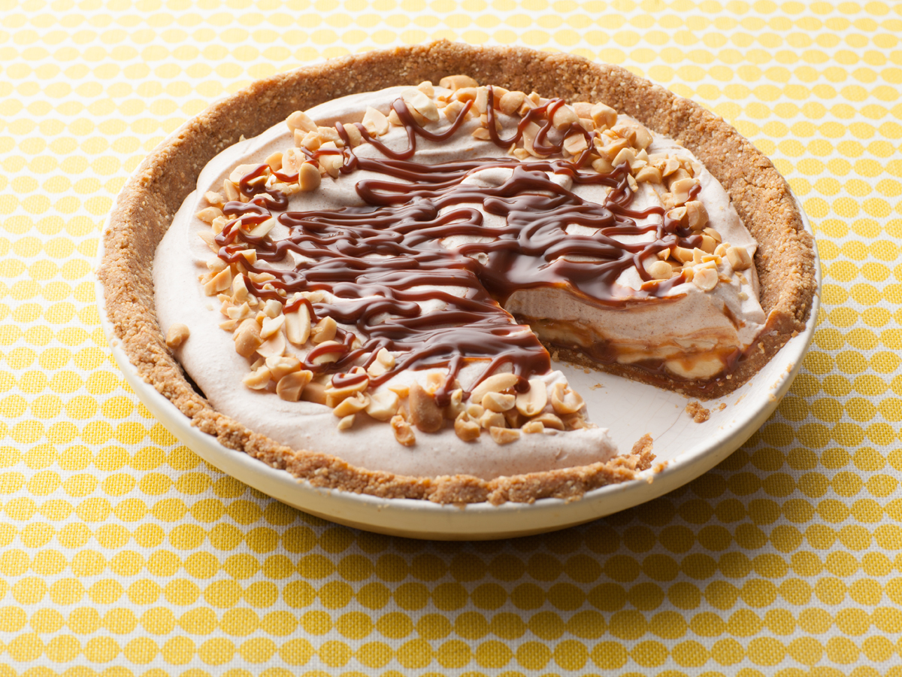

Banana Dulce De Leche Pie

Description
This banana caramel pie is a great dessert. The homemade dulce de leche is worth the work
and time, but you may substitute commercial caramel ice cream topping if desired.
Ingredients
Dulce De Leche:
- 1 (14 ounce) can sweetened condensed milk
Pie
- 1 cup graham cracker crumbs
- ½ cup butter, melted
- 4 medium bananas, sliced
- 1 ½ cups whipping cream
- 2 tablespoons confectioners' sugar
- 1 teaspoon vanilla extract
Steps
- Make the dulce de leche: Place the unopened condensed milk can in a saucepan and add water
until it comes halfway up the can. Bring to a boil over medium-high heat and cook for 3
hours, adding more water as necessary. Remove from the heat and let cool, 1 to 2 hours.
- Preheat the oven to 350 degrees F (175 degrees C).
- Make the pie: Stir graham cracker crumbs and melted butter in a mixing bowl until well
blended. Press crumb mixture evenly into a 9-inch pie plate.
- Bake in the preheated oven until lightly browned, 10 to 15 minutes. Remove pie crust from
the oven and cool on a wire rack, about 10 minutes.
- Open dulce de leche can and pour 1/2 of it (about 3/4 cup) over pie crust. Arrange 1/2 of
the bananas in a single layer over dulce de leche. Repeat dulce de leche and banana layers
once more.
- Beat cream in a mixing bowl with an electric mixer until soft peaks form. Add sugar and
vanilla; continue beating until stiff peaks form.
- Spoon whipped cream over bananas. Chill pie for at least 1 hour before serving.